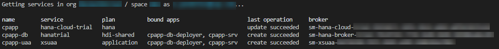
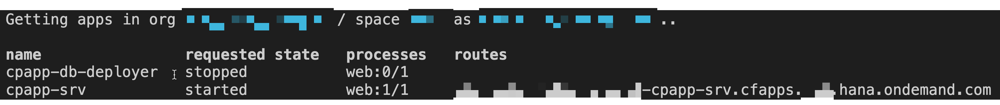
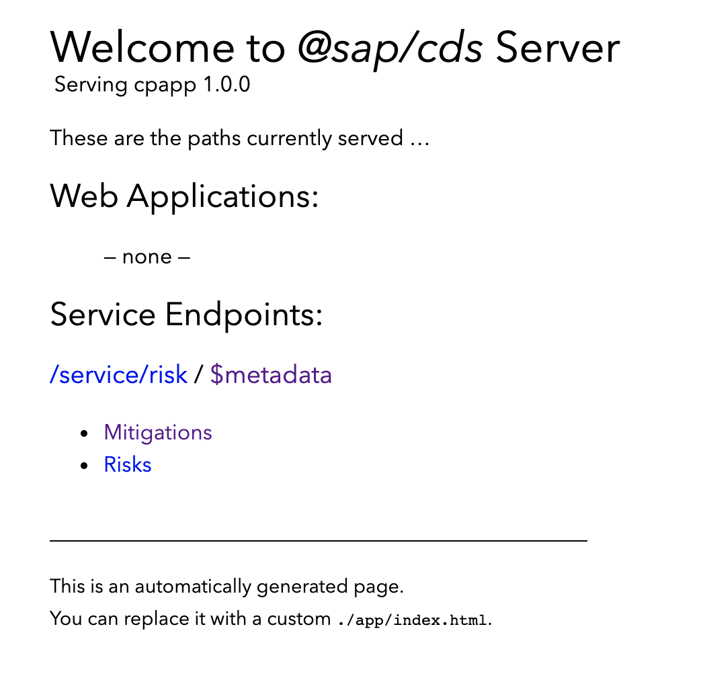

Deploy Your Multi-Target Application (MTA)
Additional Documentation
As a result of this tutorial, you have a running CAP service in the cloud based on SAP HANA. You will deploy the user interface in the tutorial Add the SAP Launchpad Service.
The deployment is based on MTA (Multi-Target Application, sometimes also called MultiApps) technology. The MTA is a SAP-proprietary way to do deployments consisting of multiple modules that can be implemented in different technologies.
Advantages compared to the cf push method
- a build tool
- automatically created service instances
- service keys
- destinations
- content deployment (HTML5, workflow, ...)
- blue-green deployment
Build and Deploy Using MTA
Prerequisites
Install the MTA Build Tool mbt
-
Check if you have already installed the Cloud MTA Build Tool (MBT):
mbt --version -
If you don't get back a version number, install the MultiApps Archive Builder:
npm install -g mbt
Install make Tool
Linux and macOS are already shipped with make. This is only relevant for Windows users.
The make tool is required by the mbt tool. You can download it from the GNU Make site:
- Go to http://gnuwin32.sourceforge.net/packages/make.htm.
- Choose the download with the description Complete package, except sources.
- Run the installer.
- Enter Edit the System Environment Variables in the Windows search box (Windows icon in the task bar). The System Properties dialog is opened.
- Choose Environment Variables....
- Choose your
Pathenv variable under User Variables for<your_user_name>and choose Edit. - Choose Browse and navigate to GNU make (usually
C:\Program Files (x86)\GnuWin32\bin). - Click OK to add GNU make to your
Pathenv variable. - Restart VS Code to make the change effective.
Install the MultiApps Cloud Foundry CLI Plugin
The MultiApps plugin is required to deploy an MTA archive. It needs to be available in your Cloud Foundry landscape's Cloud Foundry plugin repository. Therefore, you need to log on to your Cloud Foundry landscape.
If you don't know whether you’re logged on to Cloud Foundry or if you're wondering to which Cloud Foundry org and space are you logged on, you can always use cf target in a terminal to find out. If you aren't logged on already, go to your SAP BTP Cockpit by using one of the following links, depending on the landscape you want to deploy to:
-
Select your Global Account and then the Subaccount to which you want to deploy your service and application.
-
On the subaccount page, gather all the data to log in to Cloud Foundry (CF):
- the
API Endpoint - the
Org Name - the
Space Name

For your convenience, these are the API Endpoints for the different landscapes:
- the
-
Open up a terminal.
-
Set the Cloud Foundry API endpoint:
cf api <API Endpoint of your landscape> -
Log in to your Cloud Foundry account, using your SAP BTP credentials:
cf login -
Check if the
MultiAppsplugin is already installed:cf plugins -
If the
MultiAppsplugin isn’t installed, install it now:cf install-plugin multiappsIf the installation fails, do it manually as described here.
Generate MTA Deployment Descriptor (mta.yaml)
The MTA deployment is described in the MTA Deployment Descriptor, a file called mta.yaml.
As the first step, you let the CAP server generate an initial mta.yaml file. Run the following command from the project root folder:
cds add mta
The file is generated based on your previously created settings in the package.json file.
The mta.yaml file consists of different modules (Cloud Foundry apps) and resources (Cloud Foundry services).
Modules:
cpapp-srv- OData servicecpapp-db-deployer- Deploy CAP schema and data (CSV files) to database
Resources:
The resources are generated from the requires section of cds in the package.json.
cpapp-db- SAP HANA DB HDMI containercpapp-uaa- XSUAA service
The resources are Cloud Foundry service instances that are automatically created and updated during the MTA deployment.
Ensure the Right Service Plan for HDI Container
Different service plans are required for trial and productive SAP BTP accounts. Make sure that the right plan is set in the mta.yaml file:
By default, the service parameter is set to hana in the mta.yaml file. You have to change it to hanatrial if you're working in the trial landscape:
resources:
...
- name: cpapp-db
# ------------------------------------------------------------
type: com.sap.xs.hdi-container
parameters:
service: hanatrial
service-plan: hdi-shared
properties:
hdi-service-name: ${service-name}
In case you get the error: None of the service offering(s) "[hanatrial, hanatrial]" match with existing service offerings or provide service plan "hdi-shared"
If you get the error Service operation failed: Service "cpapp-db" could not be created because none of the service offering(s) "[hanatrial, hanatrial]" match with existing service offerings or provide service plan "hdi-shared", then you have to add a service plan to your entitlements.
- In your subaccount, choose Entitlements on the left.
- Choose Configure Entitlements → Add Service Plans.
- Search for SAP HANA Schemas & HDI Containers Trial entitlement.
- Add the service plans included in the entitlement.
resources:
...
- name: cpapp-db
# ------------------------------------------------------------
type: com.sap.xs.hdi-container
parameters:
service: hana
service-plan: hdi-shared
properties:
hdi-service-name: ${service-name}
Exclude CSV Files from Deployment
In one of the first steps creating the CAP application, you have added two CSV files with test data. These files are required to pre-fill local testing with the SQLite memory. Without the files, the database would be empty after each restart.
Test files should never be deployed to an SAP HANA database as table data.
This can cause the deletion of all files of the affected database table with a change of a data file, even if the data file for the affected table has been removed before. SAP HANA remembers all data files that have ever been deployed to the table and might restore it. Only data files that contain data, which are defined by the application developer and can't be changed by the application should be delivered in this way. Delivering files for tables with customer data already caused data loss in productive scenarios!
To avoid any loss of data, you change the MTA build parameters to remove all the CSV files and the hdbtabledata that is generated by the CAP server out of the CSV files. Add the following line to the mta.yaml file:
build-parameters:
before-all:
- builder: custom
commands:
- npm install --production
- npx -p @sap/cds-dk cds build --production
- npx rimraf gen/db/src/gen/data
Add Authorization and Trust Management Service (XSUAA)
The next step is to add the Authorization and Trust Management service to mta.yaml to allow user login, authorization, and authentication checks.
resources:
...
- name: cpapp-uaa
# ------------------------------------------------------------
type: org.cloudfoundry.managed-service
parameters:
service: xsuaa
service-plan: application
path: ./xs-security.json
config:
xsappname: cpapp-${space} # name + space dependency
tenant-mode: dedicated
role-collections:
- name: 'RiskManager-${space}'
description: Manage Risks
role-template-references:
- $XSAPPNAME.RiskManager
- name: 'RiskViewer-${space}'
description: View Risks
role-template-references:
- $XSAPPNAME.RiskViewer
The configuration for XSUAA is read from the xs-security.json file that was created in XSUAA Security Configuration.
But in the config element, values can be added and overwritten.
The value xsappname gets overwritten with a space-dependent value. The name has to be unique within a subaccount.
This allows multiple deployments of this tutorial in different spaces of the same subaccount. For example, different people of a team that want to try it out and don't want to create a new subaccount for each team member.
For a productive application, the xsappname should be explicitly set to the desired value.
Further, you can add role collections using the xs-security.json file. Since role collections need to be unique in a subaccount like the xsappname, you can add it here and use the ${space} variable to make them unique like for the xsappname.
Alternatively, role collections can be manually assigned in the SAP BTP cockpit.
Additional Documentation
Build, Deploy, and Test mtar File
-
Build the MTA module from the project root folder:
mbt build -t ./This creates a
mtarfilecpapp_1.0.0.mtarin the current folder (option:-t ./). -
Deploy the module to your current Cloud Foundry space:
cf deploy cpapp_1.0.0.mtar -
After successful deployment, check if all the services have been created:
cf servicesYou should see the following services in your space:

-
Check if the apps are running:
cf apps
You can also deploy a single module using
-m <module-name>command line parameter. -
Enter the CAP service URL in your browser using the hostname displayed for
cpapp-srvin the previous steps.You see the CAP start page, like this:

-
When you choose the Mitigation or Risk service entity, you will see an error message:

The service expects a so called JWT (JSON Web Token) in the HTTP Authorization header that contains the required authentication and authorization information to access the service. In the next tutorial, you will deploy the SAP Fiori UIs, so that you can access your UIs from SAP Fiori Launchpad. The Launchpad will trigger the authentication flow to provide the required token to access the service.